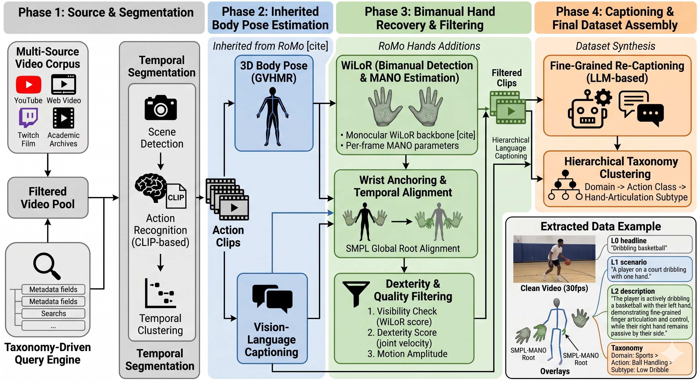

NeurIPS 2026
RoMo motion ecosystem
RoMo Hands
A Large Scale Richly Organized Text to Hand Motion Dataset
Video
RoMo Hands in four minutes
The dataset, how it was built, and what the benchmark reveals.
Motion gallery
Hand motion in context
Every card is a real RoMo Hands sequence. The hands are highlighted in pink; drag to orbit, scroll to zoom, and hover to inspect the motion.
Loading hand animations…
Overview
Body-scale data for dexterous hand motion
Text-driven body motion generation has advanced rapidly, but pure-hand synthesis remains bottlenecked by data. Existing datasets often treat hands as rigid end-effectors, lack fine-grained captions, or are too small for modern generative models.
RoMo Hands introduces approximately 542K in-the-wild bimanual sequences spanning 884 hours and 95.5 million frames. Each sequence carries five caption levels, from a compact action tag to a paragraph describing finger articulation, temporal dynamics, palm orientation, and spatial relations.
We also introduce a 393-D bimanual representation and benchmark diffusion, masked-token, and autoregressive generators. The central result is not a single winner: semantic alignment and physical plausibility produce different rankings, showing why hand-motion generation requires both kinds of evaluation.
Explore the work
Go deeper, one layer at a time
Explore the dataset, representation, benchmark, and quality audit without turning the main page into the full supplement.
Dataset
Scale without giving up hand detail
RoMo Hands extends the RoMo collection stack with hand-specific reconstruction, filtering, and language supervision.
Scale
Duration and caption volume
10.6× the duration of CLUTCH. Hover for setting and frame counts; use the scope control to focus on pure-hand datasets.
Language
Caption depth by level
Five supervision levels span a 43× range. Hover for mean word counts and comparator values.
In-the-wild bimanual motion
MANO motion recovered from diverse public video, anchored to temporally consistent body wrists and filtered for visibility.
Dexterity-first curation
Detection-ratio and articulation filters suppress occluded, static, and low-information clips before captioning.
Five levels of language
Captions progress from action tags to detailed descriptions of fingers, wrists, interactions, timing, and inferred intent.

The RoMo Hands curation pipeline.
RoMo's web-video collection and semantic segmentation feed WiLoR hand recovery, wrist anchoring,
dexterity filtering, and five-level captioning.
Representation
A body-style representation built for two hands
Rhand wraps MANO rotations in explicit positions, velocities, and a yaw-only bimanual heading. A synthetic root at the wrist midpoint preserves symmetry without choosing one hand as the anchor.
Symmetric per-frame representation
393 dimensions
Left MANO hand
192-D
48positions
48velocities
966D rotations
16 joints × 12 channels
Right MANO hand
192-D
48positions
48velocities
966D rotations
16 joints × 12 channels
192-D left
+
9-D shared root
+
192-D right
=
393-D
32 MANO joints
Wrist-midpoint root
Inter-wrist heading
Type-aware normalization
Generation-side ablation
Redundant channels help across two generator families
With architecture and training held fixed, the full representation improves R@1 from 39.5% to 54.7% over raw MANO for MoMask and from 64.6% to 66.5% for Kimodo M.
The Kimodo M models were retrained for this ablation and are not directly comparable to the benchmark table.
| Representation | MoMask | Kimodo M |
|---|---|---|
| Rhand-393 | 54.7% | 66.5% |
| MANO-102 | 39.5% | 64.6% |
| CLUTCH-198 | 36.8% | 64.6% |
Benchmark
Semantic alignment is not physical quality
Four generator configurations are evaluated with a shared representation, text encoder, semantic evaluator, and hand-specific physical metrics.
Semantic
Does the motion match the text?
R-Precision, MM-Dist, FID, CLIP alignment, diversity, and multimodality are measured in a frozen text–motion embedding space.
Retrieval leaderMoMaskR@1 54.00%
Physical
Does the hand move plausibly?
Acceleration, local jerk, inter- and self-penetration, and high-frequency power expose failures hidden by retrieval scores.
Cleanest overallKimodo MInter-penetration 1.06%
Taxonomy-stratified evaluation
Model behavior changes by action category
Aggregate scores hide category-specific behavior. Select a category and hover each axis for its raw metric value.
Quality audit
Human validation and leakage checks
Human ratings and a leakage audit test the quality of an automatically curated dataset.
Captions track the captured action
4.16/ 5 action match
81% of ratings are at least 4/5. Hand-specific caption faithfulness averages 3.79/5 across 370 ratings.
Recovered hand motion is generally usable
3.53/ 5 reconstruction quality
Raters assess jitter, discontinuities, and unnatural finger poses while viewing reconstruction beside source video.
Source overlap does not drive the ranking
≤ 2.6 ptsabsolute R@1 shift
Removing test clips whose source video appears in train preserves the ranking of all four evaluated generators.
Human evaluation
Caption fidelity by detail level
Fine-grained caption accuracy remains stable across levels. Hover for mean scores and the share of ratings at least 4/5.
Dataset diagnostics
Motion statistics explorer
RoMo Hands reduces static clips to 0.2%. Switch views to inspect hand engagement, bilateral symmetry, and temporal quality.
Community Leaderboard
Text-to-Hand Motion Benchmark Leaderboard
Evaluated on the 17,348 RoMo Hands benchmark test clips (40–196 frames, 20 replications) under the shared 393-D representation, frozen TMR evaluator, and 3D MANO forward-kinematics physical suite. Click any metric column header to re-sort.
1st Best
2nd Runner-up
↑ higher · ↓ lower · → closer to GT
| Generator | Semantic · 201-D Essential TMR | Physical · 3D MANO Forward Kinematics | ||||||||||
|---|---|---|---|---|---|---|---|---|---|---|---|---|
| Method | Paradigm | R@1 ↑ | R@3 ↑ | R@10 ↑ | MM-D ↓ | FID ↓ | Div. → | Accel → m/s² |
Jerk → m/s³ |
Inter ↓ % |
Self ↓ mm |
HF ↓ ratio |
| Ground Truth Ref | In-the-Wild | 63.77% | 82.59% | 96.13% | 0.864 | 0.000 | 120.41 | 8.38 | 14.3 | 0.64% | 0.002 | 0.0081 |
| MoMask CVPR ’24 ↗ | Masked RVQ | 54.00% | 78.62% | 93.88% | 0.945 | 0.129 | 115.27 | 4.99 | 265.2 | 1.58% | 0.017 | 0.0153 |
| Kimodo M 2025 ↗ | Diffusion | 53.82% | 76.99% | 93.76% | 0.942 | 0.087 | 116.34 | 6.03 | 22.9 | 1.06% | 0.066 | 0.0077 |
| MDM (DiP) ICLR ’23 ↗ | Prefix Diff. | 42.28% | 66.15% | 88.92% | 1.031 | 0.144 | 113.44 | 7.92 | 71.2 | 2.19% | 0.382 | 0.0132 |
| MotionMillion 2025 ↗ | AR (FSQ) | 31.26% | 51.55% | 82.37% | 1.105 | 0.314 | 109.14 | 5.77 | 76.1 | 1.82% | 0.000 | 0.0082 |
| Method | Paradigm | R@1 ↑ | R@2 ↑ | R@3 ↑ | R@5 ↑ | R@10 ↑ | MM-Dist (raw) ↓ | FID ↓ | Diversity → |
|---|---|---|---|---|---|---|---|---|---|
| Ground Truth Reference | In-the-Wild Data | 63.77 ± 0.34 | 76.25 ± 0.31 | 82.59 ± 0.29 | 89.49 ± 0.23 | 96.13 ± 0.11 | 69.04 ± 0.02 | 0.000 ± 0.000 | 120.41 ± 0.41 |
| MoMask | Masked RVQ | 54.00 ± 0.41 | 70.68 ± 0.36 | 78.62 ± 0.24 | 86.07 ± 0.24 | 93.88 ± 0.14 | 74.52 ± 0.02 | 0.129 ± 0.000 | 115.27 ± 0.34 |
| Kimodo M | Diffusion | 53.82 ± 0.37 | 69.04 ± 0.29 | 76.99 ± 0.28 | 85.56 ± 0.16 | 93.76 ± 0.13 | 73.67 ± 0.02 | 0.087 ± 0.000 | 116.34 ± 0.34 |
| MDM (DiP) | Prefix Diff. | 42.28 ± 0.21 | 57.30 ± 0.42 | 66.15 ± 0.43 | 76.95 ± 0.28 | 88.92 ± 0.15 | 80.19 ± 0.02 | 0.144 ± 0.000 | 113.44 ± 0.40 |
| MotionMillion | AR (FSQ) | 31.26 ± 0.46 | 43.97 ± 0.46 | 51.55 ± 0.43 | 63.40 ± 0.42 | 82.37 ± 0.46 | 87.10 ± 0.00 | 0.314 ± 0.000 | 109.14 ± 0.49 |
| Method | Paradigm | Inter-hand Pen Depth ↓ mean mm | Self-hand Pen Ratio ↓ % frames >10mm | Bone-Length Viol. ↓ % frames | Finger Flexion → mean m (target 0.1120) |
|---|---|---|---|---|---|
| RoMo Hands GT Reference | In-the-Wild Data | 0.081 ± 0.052 | 0.00 ± 0.00% | 0.00 ± 0.00% | 0.1120 ± 0.0010 |
| GRAB GT Studio Ref | Studio Optical Mocap | 0.000 ± 0.000 | 0.00 ± 0.00% | 0.00 ± 0.00% | 0.1217 ± 0.0007 |
| GigaHands GT Multi-View Ref | Multi-Camera Studio | 0.000 ± 0.000 | 0.00 ± 0.00% | 0.00 ± 0.00% | 0.1251 ± 0.0005 |
| Kimodo M | Diffusion | 0.150 ± 0.093 | 0.00 ± 0.00% | 1.54 ± 0.19% | 0.1127 ± 0.0014 |
| MoMask | Masked RVQ | 0.190 ± 0.170 | 0.07 ± 0.14% | 6.34 ± 0.56% | 0.1136 ± 0.0016 |
| MotionMillion | AR (FSQ) | 0.200 ± 0.114 | 0.00 ± 0.00% | 0.08 ± 0.02% | 0.0906 ± 0.0012 |
| MDM (DiP) | Prefix Diff. | 0.243 ± 0.112 | 1.05 ± 0.84% | 1.93 ± 0.28% | 0.1035 ± 0.0014 |
| Method | Paradigm | R@1 ↑ (Δ vs segment split) | FID ↓ (Δ vs segment split) | MM-Dist ↓ (Δ vs segment split) | Diversity → (target 119.1) |
|---|---|---|---|---|---|
| Ground Truth 7,679 Video-Disjoint Clips | In-the-Wild Data | 59.7% (-4.1) | 0.000 (+0.000) | 0.880 (+0.016) | 119.1 (-1.3) |
| MoMask | Masked RVQ | 54.9% (+0.9) | 0.158 (+0.029) | 0.922 (-0.023) | 113.9 (-1.4) |
| Kimodo M | Diffusion | 54.5% (+0.7) | 0.116 (+0.029) | 0.920 (-0.022) | 114.2 (-2.1) |
| MDM (DiP) | Prefix Diff. | 40.5% (-1.8) | 0.171 (+0.027) | 1.030 (-0.001) | 114.0 (+0.6) |
| MotionMillion | AR (FSQ) | 28.7% (-2.6) | 0.322 (+0.008) | 1.130 (+0.025) | 107.7 (-1.4) |
Submit your method
Want to add your model’s results to the RoMo Hands Leaderboard?
Evaluate your generator on the 17,348 benchmark test clips (splits/benchmark_test.txt) using the official
TMR evaluator and Motion Toolbox
physical suite, then email Yizhak Ben-Shabat (sitzikbs [at] gmail.com)
with your method name, paper/code link, and metric scores.
Poster
NeurIPS 2026 Poster
Click the poster to open the full print-ready PDF (140 × 90 cm), or download the high-resolution assets below.
Citation
RoMo Hands
@inproceedings{BenShabat2026RoMoHands,
author = {Ben-Shabat, Yizhak and Zhang, Jiahao and Liu, Joseph and Moon, Seonghyeon and Lee, Young-Yoon and Jiang, Haomiao and Jacob, Oren and Kapadia, Mubbasir},
title = {{RoMo Hands}: A Large Scale Richly Organized Text to Hand Motion Dataset},
booktitle = {Advances in Neural Information Processing Systems (NeurIPS)},
year = {2026},
}